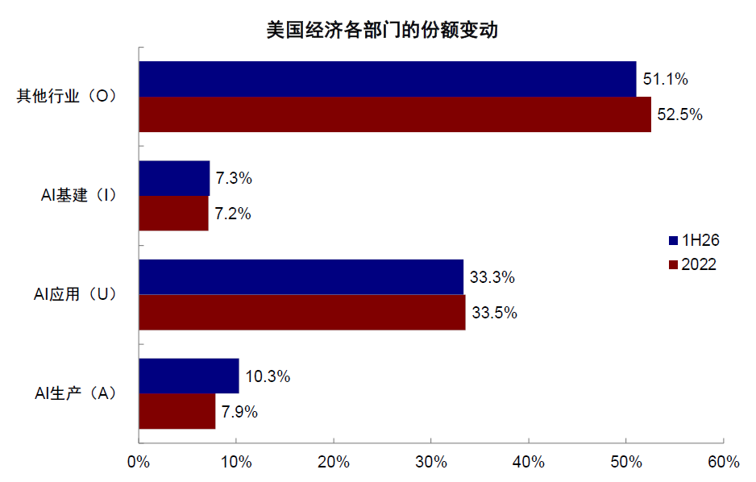

7月以来，全球AI链条持续调整，背后除了不断走高的成本外，更重要的是市场担心AI能产生的回报撑不住大规模的投资，例如看似市场是在担心CoreWeave的信用风险，背后可能是担心Anthropic ARR的放缓，所以市场要算ROIC（回报）与WACC（成本）的账，这与去年四季度市场担心私募信贷的“剧本”如出一辙。因此，决定后续AI走势的关键在于大模型的迭代和新业务模式的兑现（如今年一季度Anthropic业绩超预期），这也恰是提升AI回报的关键。
图表：CoreWeave的CDS飙升（违约担忧）引发一轮抛售

资料来源：Bloomberg，中金公司研究部
图表：截至二季度，美国云厂商的19.9%的ROIC仍能覆盖9.6%的WACC
资料来源：FactSet，Bloomberg，中金公司研究部
除了要“努力”证明自身回报足以覆盖不断膨胀的资本开支外，中美AI也都走到了另一个关键节点：即自己的能力（自己赚的钱，经营性现金流）撑不起自己的野心（资本开支的投资需求）了，需要向外部融资获取支持（自由现金流转负），而无法像此前那样只靠自己赚的钱来投资。当然，借钱不是问题，借钱却赚不到匹配的回报才是问题。
但无论如何，当AI在中美都开始向全社会汲取资源的时候，另一个越来越重要的问题也逐渐浮出水面：AI是否会逐渐从拉动其他经济部门的“朋友”，逐渐走向其对立面，变成挤出传统需求的“敌人”？换言之，K型分化的上半端能否继续对冲下半端，使整体增长依然向上？
中美其实都面临这个问题：近期美债利率的走高，CoreWeave风险暴露，中国内需的疲弱，都是这个问题的某种折射。只不过，中美的传导和挤压路径不同、容忍度和临界值也各异。搞清楚这个“临界值”，也就搞清楚了经济与政策能承受的边界，对我们判断中美的政策路径与选择投资方向都大有裨益。
一、AI走到了一个关键节点：开始从全社会汲取资源来支持其发展，中国可能快于美国
今年二季度，美国AI走到了一个关键节点：即无法用自己赚的钱（经营性现金流）来支持越来越膨胀的资本开支，因此需要对外融资（股权或债权）来弥补资金缺口，标志性的事件即是今年二季度除微软和Meta外的主要云厂商（Hyperscaler）自由现金流都转负（经营现金流-资本开支）。
图表：美国云厂商的资本开支逼近经营性现金流

资料来源：FactSet，中金公司研究部
当然，并不是说借钱就是坏事，恰恰相反，借钱可以撬动更多资金，也可以提高ROE（ROE=利润率*周转率*杠杆），只有借钱却赚不回来相应的钱才是坏事。对云厂商而言，截至二季度19.9%的ROIC完全可以覆盖9.6%的WACC，更不用说不到5~7%的企业债融资。
只不过，当AI开始向全社会汲取资源后，我们就不能只看AI自己的回报，还要考虑由此对传统部门的挤出效应，加总到一起是什么效果，最终来影响政策走向与市场方向。
美国是如此，中国也是类似。而且，由于中国的AI投资ROIC更低（截至二季度，中国头部云厂商如腾讯、阿里巴巴及百度的加权ROIC约11.9%，低于美国云厂商的19.9%），且二季度自由现金流均已转负，需要更多外部资金支持。在非完全市场定价决定要素资源分配的环境下，对传统需求的挤出可能更快。
图表：截至二季度，中国头部云厂商的加权ROIC约11.9%，低于美国云厂商

资料来源：FactSet，中金公司研究部
图表：中国头部云厂商二季度自由现金流均已转负

资料来源： Bloomberg，中金公司研究部
二、主要经济部门划分：AI与其他部门“五五开”；美国AI生产多，中国AI基建多
界定清楚新技术的投资生产、应用和其他传统部门，是我们判断AI是传统需求的“朋友”还是“敌人”，以及一轮技术扩张是局部繁荣，还是广泛的经济增长的前提。
技术革命的经济影响，不能只观察技术生产部门。技术革命对经济的影响既可能来自新技术本身的投资与生产，也可能来自新技术应用带来的生产率改善和新供给创造，也有可能通过要素价格影响到尚未有效采用新技术的部门。不难理解，新技术对不同部门的影响存在明显差异。参考Stiroh（2002）的思路，我们将经济体划分为四个部门，更好体现技术革命的影响，具体来看：
1) AI生产部门，主要涉及AI大模型生产环节，如电子计算机、软件、数据中心/云服务、IT服务；
2) AI基建部门，主要涉及AI数据中心的基础设施和能源环节，是AI生产直接拉动的部门，如电力、建筑、建材、金属、机械和电气设备；
3) AI应用部门，包括金融、专业服务、研发、医药、影视传媒等；
4) 其他部门，与AI投资和消费直接无关的部门，如食品饮料、地产、交运仓储、文娱等。
对于美国，截至2026年上半年，相比2022，AI生产部门占比上升2.4ppt至10.3%；AI应用和基础设施部门基本持平，合计比例约40%。其他部门依然超过50%，不过相比2022年底下降1.4ppt。简言之，AI相关与不相关部门大体五五开。
对于中国，AI相关与不相关部门大体也是五五开，不过AI相关部门的结构与美国差异明显。截至2025年底，AI生产部门占比不到5%，仅有美国的一半；AI应用部门份额与美国相差无几；不过AI基建部门的份额接近14%，约为美国的2倍；其他部门占比约50%，和美国接近。
图表：美国AI相关与不相关部门大体五五开 

资料来源：BEA，中金公司研究部
图表：中国也大体是五五开，但结构与美国差异较大，基建比例更高

资料来源：Wind，中金公司研究部
三、AI作为“朋友”，如何拉动其他部门？拉动投资出口、财富效应和提高劳动生产率
作为传统需求的朋友，AI的正外部性主要体现在直接通过投资拉动增长和出口、提升劳动生产率、以及财富效应这三个方面。
► 直接通过投资和出口等拉动增长。这一点在过去几个季度尤为明显，中美都是如此。二季度，美国实际GDP环比折年增长2.2%，如果扣掉进口因素，AI广义需求（AI生产投资和基建）对美国增长贡献28%，拉动约0.6ppt。同期，中国实际GDP季调环比折年4.77%，AI贡献47%。对中国的拉动主要体现在出口上，AI相关产品对净出口同比增长的贡献超过60%，净出口对GDP增长贡献21%，拉动GDP增长0.6ppt。盈利也是如此，AI相关板块贡献美股增长的53%，贡献了A股和港股19%和2.4%。换言之，美国扣掉AI，一半的盈利没了；中国扣掉AI，一半的增长没了。
图表：二季度，美国实际GDP环比折年增长2.2%，AI相关需求贡献28%增长

资料来源：Haver，中金公司研究部
图表：二季度，中国实际GDP季调环比折年4.77%，AI相关需求贡献47%增长

资料来源：Wind，中金公司研究部
► 市场上涨带来的财富效应。AI行情下的股市上涨会带来明显的财富效应，而财富效应又会提振居民的消费预期。Chodorow-Reich 等（2020）通过对本地非贸易部门（如零售、餐饮等直接受本地需求驱动的服务业）的工资总额的实证检验显示：股票财富每增加1美元，居民每年将增加约3.2美分的实际消费支出。这一点在美国体现的更明显，得益于美股更强的表现以及居民部门更大的股市敞口（401K等）。根据美联储的数据统计，2Q26美股总市值中个人等非机构投资者持股占比超过42%，相比年初增加1.4ppt；居民的资产负债表中，含权类资产的占比47%，较年初增加2ppt；今年以来的可支配收入中，股息等收入占比超过9%。相比之下，中国的财富效应仍有待提升。
图表：股市财富冲击后，非贸易部门工资总额上升
资料来源：Chodorow-Reich et al., (2020)，中金公司研究部
图表：2Q26含权类资产在美国居民资产中占比接近47%

资料来源：Bloomberg，中金公司研究部
图表：今年以来，A股5500家公司中位数回报-17%

资料来源：Wind，中金公司研究部
图表：截至2025年，居民配置权益类资产的比例依然很低

资料来源：CHFS，中金公司研究部
► 提升劳动生产率及知识外溢带来的正外部性。AI拉动经济的第一性原理来自其相对低成本、高效率完成任务后对劳动生产率的提升。Anthropic测算，AI辅助可使部分任务完成时间平均缩短80%，且相对劳动力成本更低。随着大模型应用场景日益丰富，美国非农部门整体劳动生产率有所提升。其中，AI投入较多的行业如信息技术、金融保险的劳动生产率改善尤为明显。生产效率的改善，一方面提升了全要素生产率，另一方面，也驱动了词元调用量持续高速增长，云厂商算力投入不断加码，AI算力、基础设施等相关环节需求快速扩张。
知识外溢带来正外部性：模型、软件、数据和组织经验向更多企业传播，可降低后续成本，使此前AI使用强度较低的其他部门逐渐转变为应用部门。知识扩散还可能产生未被完全定价的正外部性，令AI的社会收益高于私人收益。2025年，Brynjolfsson 等（2026）估计，美国用户从生成式AI聊天工具获得的年度消费者剩余约为1162亿美元。同期Gartner预测全球终端购买者在生成式AI模型上的支出仅为142亿美元，前者约为后者的8.2倍。对照其他行业，UberX用户每支付1美元基础车费产生约1.57美元的消费者剩余，移动通信的消费者剩余为1倍，生成式AI则高达8.2倍。从结果看，AI的社会收益显著高于私人收益，因此仅以模型市场交易额衡量其经济贡献，将系统性遗漏掉最大的一块社会福利价值。
四、AI作为“敌人”，如何挤出其他部门？挤占要素资源、约束政策空间以及替代部分就业
然而，一旦AI对社会产生的回报（自身ROIC与正外部性）小于AI对其它部门资源的挤占，AI就有可能从传统需求的“朋友”变成“敌人”。AI开始需要外部融资和推高原材料价格，就是从要素资源对传统需求挤占的典型例子，体现在三个方面：
► 挤占实物资源。AI消耗电力等关键资源，并推高其它部门关键要素的边际成本和产能利用率。AI资本开支并非单纯资金支出，还需要芯片、服务器、电力、电网接入、土地等实物投入。当相关供给短期缺乏弹性时，新增AI项目可能通过推高电价、设备交付价格、建设成本及高技能工资等形式，挤占其它部门的实物资源。2022年底以来，美国私营部门数据中心建造支出增长近5倍。全球数据中心耗电量占产电比例从2020年的1.0%升至2025年的1.5%，尤其是美国这一比例从2020年的2.6%快速升至2025年的4.9%。此外，过去几年随AI的发展，美国油气、电气设备、采掘、机械和电子等行业产能利用率明显抬升。今年以来，存储价格上涨110%，推动美国PPI里的电子元件及配件分项同比从去年底的4%最高升至6月的29%，为美国PPI同比抬升的主要贡献之一。
图表：全球数据中心耗电量占产电量的比例不断抬升，尤其是美国

资料来源：IEA，Ember（2026），中金公司研究部
► 挤占金融资源。AI跨越开始需要外部融资的节点后，对其他部门的挤占体现在价和量两个维度：1）价的维度，推高整体融资成本。AI需求的强劲，叠加外部油价等供给扰动，共同推升了成本。例如随着美国国债的上行，30年按揭利率已升至7.5%的高位，小企业短期贷款利率也明显升至8.2%。从信用利差看，美国投资级企业债的信用利差并未相对科技行业明显走高，但高收益债利差明显走阔。
图表：美国整体投资级企业债的信用利差相对科技行业并未明显走高

资料来源：Bloomberg，中金公司研究部
图表：美国高收益债利差近期明显走阔

资料来源：Bloomberg，中金公司研究部
2）量的维度，AI巨量发债也会挤占包括美国国债和其他的融资需求，但目前也不显著。一方面，AI巨头增发长期投资级债会挤出长线基金对美国国债的配置需求，叠加美债市场三季度本身的供给“小高峰”，共同导致了 8月的“美债风暴”。另一方面，AI发债对非AI企业融资也会存在挤出作用，尤其是市场预期2027年美国科技龙头信用债发行规模再新增2000~3000亿美元，只不过目前挤出作用还不显著。科技行业（信息技术+通信）在美国非金融企业债供给中的比例已升至40~50%，但非金融非科技发债并未明显减少。即便扣除到期后的净供给，非金融非科技的投资级净供给也仍然维持正增。
图表：科技行业（信息技术+通信）在美国非金融企业债供给中的比例已升至40~50%

资料来源：Bloomberg，中金公司研究部
图表：美国非金融非科技行业投资级企业债净供给仍维持正增

资料来源：Bloomberg，中金公司研究部
► 约束政策空间。AI需求强劲也约束美联储的政策空间。美国经济也是K型分化，以地产为代表的传统需求承受高利率压制，成屋销售5月后再度转弱。按理说，美联储应该降息来提振传统需求才对，但现在却不得不加息以应对更强的投资和更高的通胀。据美联储估算，美国自然利率已从2022年底的0.99%升至1.44%。年初至今，10年美债利率上行的79bp中，绝大部分由实际利率（71bp）而非通胀预期（9bp）贡献。
图表：年初至今10年美债利率上行，大部分由实际利率（71bp）而非通胀预期（9bp）贡献

资料来源：Bloomberg，中金公司研究部
相比美国，中国的挤占主要体现在财政与信贷资源上。一方面，财政资源更多向“六张网”建设等新质生产力方向倾斜；另一方面，信贷资源的投放也体现了明显的政策导向，中国新增贷款向科技等领域集中，房地产与消费相关贷款占比大幅下滑，今年以来消费仍然疲弱、居民资产负债表收缩。
► 替代部分就业。AI在提高生产效率的同时，对就业也有替代作用，尤其是AI暴露度高的行业。2022年底ChatGPT问世以来，美国非农就业人数增长470万人，但行业之间差距显著，教育健康（+278万人）、政府部门（+61万人）和休闲酒店（+44万人）就业人数增加的同时，而受AI冲击较明显的商业服务（-37万人）、信息业（-30万人）及金融活动（-9万人）等则减少较多。此外，据达拉斯联储研究[2]，高AI暴露度行业的工资增速更高，但年轻群体和经验丰富群体之间的工资差异更大，这可能使年轻求职者面临更大的挑战。
图表：美国受AI冲击较大的商业服务、信息业和金融活动等就业人数减少较多

资料来源：Haver，中金公司研究部
图表：美国科技产业和金融就业人数2022年底以来明显减少

资料来源：Haver，中金公司研究部
五、AI何时由“朋友”转向“敌人”？中美的路径和临界点不同；美国利率6%，中国政策容忍度高
既然AI已经开始从社会汲取资源，那接下来的问题是，AI何时会从“朋友”转向“敌人”？这本质上是测算经济和政策能承受的代价，比如当资源都铺向科技时，K型的上端能对冲下端多久？美联储何时停止加息、甚至转向降息？中国政策何时更多关注更弱的内需？
在具体测算过程中，需要注意的是，中美由于AI资金来源和政策目标不同，决定了挤出路径和临界点也有差异：1）美国AI融资绝大部分来自私人部门，因此主要通过利率和美联储政策来挤出；2）中国至少有三成来自政策相关资金，且银行信贷等也有政策导向，因此更多通过财政和信贷资源的倾斜来挤出。此外，中国更关注长期战略，因此对短期的挤出的容忍度也更高。
► 美国能承受多高的利率？整体6%左右，AI 7%以上，传统4%左右。美国AI和传统需求板块的投资回报相对融资成本差异显著。五大云厂商的ROIC（20%）仍远高于WACC（9%），而传统需求如利率敏感的地产，抵押贷款利率（7.5%）早已高于租金回报率（6.86%）。美股内部AI和非AI的差异同样很大，我们将标普500中信息技术与通讯服务行业加上可选消费行业中的亚马逊作为美股AI的代表，其余406只成分股作为非AI的传统需求代表。截至2026年三季度，AI板块的ROIC（35%左右）与WACC（10~15%）差值高达21%，而非AI仅为3%。
图表：截至2026年三季度，美股AI板块的ROIC与WACC差值高达21%，而非AI仅为3%

资料来源：Bloomberg，FactSet，中金公司研究部
AI可承受利率约7~7.5%。我们假设ROIC不变，若五大云厂商的ROIC与WACC之差收窄至2015-2023年AI趋势兴起之前的平均水平8ppt，对应WACC约11.9%。综合考虑美债利率上行对债券成本和股权成本的影响，假定β不变，倒算得到无风险利率约7~7.5%。
传统部门能承受利率4%左右。1）以地产为例，假设30年抵押贷款利率与近年租金回报率（6.2%）打平，再根据抵押贷款利率（拆分为10年美债利率、MBS利差和一二级利差）分项中MBS利差和一二级利差2015年以来的均值，推算对应10年美债利率约4~4.2%。2）标普500中“非AI”板块（除信息技术、通信服务和亚马逊），假定ROIC与WACC之差回到2015年以来均值4.5%，对应WACC 9.7%，回归得到对应10年美债利率为4%。
美国整体经济能承受利率约为5.5~6%，考虑：1）AI对美国GDP贡献约30~50%，2）标普中AI与非AI市值权重约“五五开”，加权得到美国整体经济能承受的利率约为5.5~6%。
图表：假设ROIC不变，若云厂商ROIC与WACC之差回到均值，对应的美债收益率7~7.5%

资料来源：Bloomberg，FactSet，中金公司研究部
图表：若抵押贷款利率与近年租金回报率（6.2%）打平，则对应10年美债利率在4%左右

资料来源：Bloomberg，Haver，中金公司研究部
► 美国能承受多高的成本上升？整体50%，AI应用部门4-5%，其他部门8-10%。AI生产投资一方面拉动上游产业链的需求，但也带动原材料和相关商品价格上涨，挤压其他部门利润。我们测算，假设云厂商资本开支达到9000亿美元，剔除进口漏出效应，如果AI相关成本涨价50%，那么资本开支带来的1617亿美元总盈利（GOS）将被成本涨价和进口漏出抵消；当成本涨价3.6%，那应用部门从资本开支获得的收益将被成本价格上涨挤出；若成本上涨8.6%，那其他部门的收益也将被抹平。AI生产、基础设施部门在成本涨价过程中整体没有明显损失，甚至部分受益。
图表：AI主要成本项变动对盈利削弱的情景假设

资料来源：BEA，中金公司研究部
► 中国政策能承受多大的挤出？由于政策更多关注长期战略目标，而无法简单量化测算，因此需要从三个维度来“测算”政策的临界点：1）增长，《辅导百问》指出，为实现长期增长目标，2035年实现人均国内生产总值达到中等发达国家水平；2）就业，关乎社会稳定，目前尚未达到“924”政策发力前低点；3）杠杆与资产负债表。任何低回报的投资最终都只能转化为债务和过剩产能。不论是银行还是地方政府的债务，最终背后的信用都是中央政府。但狭义口径看，财政空间相对有限（广义赤字率已经高达8%以上，非金融部门整体的杠杆率308%，甚至高于美国的251%）。
“十五五”规划中将“加快高水平科技自立自强，引领发展新质生产力”进行专章部署，自主可控和科技创新是关键两大中长期抓手。战略目标明确、短期压力可控、财政空间没那么大，因此我们预计财政力度和政策方向的大幅转向可能还需要一定时间或更大压力。
图表：美国AI投资由私人部门主导，但中国则是政府和私人部门的双轮驱动

资料来源：FactSet，中金公司研究部
图表：中国计算机通信和电子和通用设备制造的产能利用率分位数较高

资料来源：Wind，中金公司研究部
本文来源：中金点睛